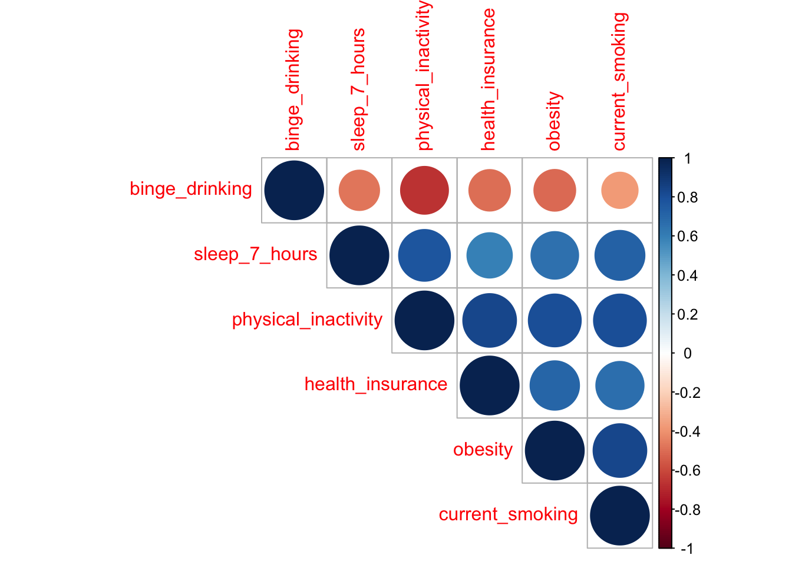
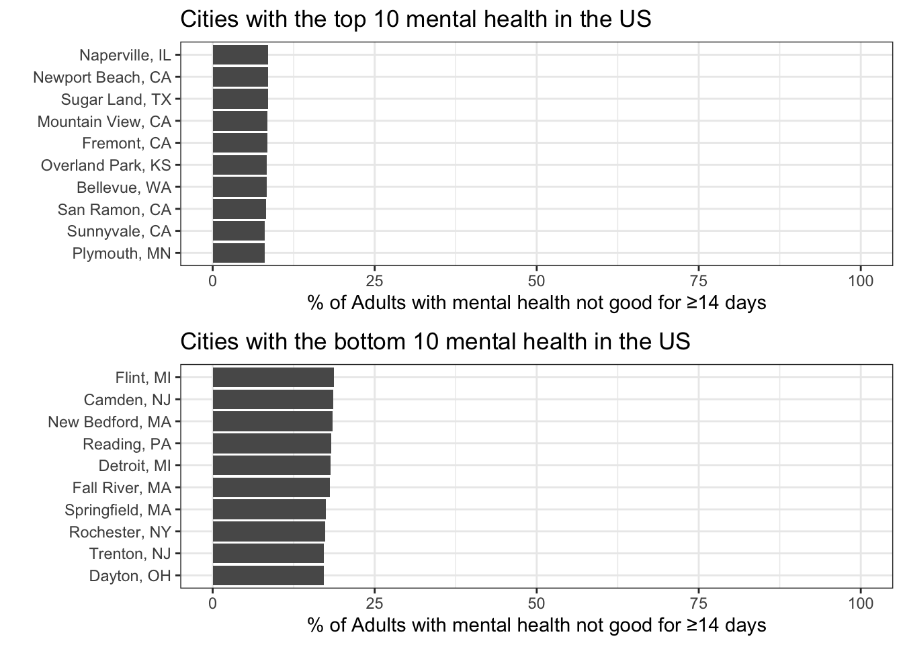

Report
Research questions
Initial questions
When we started this project we were interested in looking at cancer, specifically uterine cancer, as an endpoint. Our plan was to explore the health behaviors associated with uterine cancer, and look at geographic variation in the uterine cancer rates. The 500 Cities dataset includes data on cancer, but after further exploration we discovered that the cancer variable available was for all cancers except for melanoma, and the group felt that the data was too general to do a meaningful analysis.
We switched our outcome to mental health because we felt it was a timely and interesting topic, and because the data supported the scope of the project. We continuted with our plan to look at the association of health behaviors with mental health as the outcome and to look at the geographic variation.
Data & Methods
This project utilizes data from the 500 cities dataset, publicly available for download here. The data are based on the Behavioral Risk Factor Surveillance System (BRFSS) survey, which is a national survey of adults’ behavior surrounding their health (risk behavior, use of preventative services, chronic conditions). Data are summarized using small area estimation methods and are not reported on the individual level, but at the census-tract level and include geographic identifiers such as latitude and longitude, city Federal Information Processing Standards (FIPS) and census tract FIPS.
The 500 cities data source includes data on health outcomes such as asthma, arthritis, cancer, heart disease, and mental health, along with data on unhealthy behaviors such as drinking, smoking, and obesity.
The Centers for Disease Control and Prevention’s (CDC) 500 Cities 2018 data was used for this analysis, linked with American Community Survey census tract data. All data is for the population 18 years and over. The 500 Cities Project is to provide city- and census tract-level health data in the largest 500 cities in the US, including chronic disease risk factors, health outcomes, and clinical preventive service use. The primary outcome is self-reported mental health where adults are considered to be in good mental health if they report being in good mental for a majority of days in a given month. Cities were ranked based on the percentage of adults reporting good mental health.
We also merged data from the American Community Survey (ACS) at the census level to the 500 cities dataset. From the ACS data, we obtained demographic information, such as the percent of adults in the census district that were male, white, and had less than a high school education.
A random effects model was developed to examine the geographic variation across cities. We first explored the data and examined the association between availabile health behavior factors and mental health. We then examined the pairwise correlations between the health behavior factors and found (perhaps not surprisingly) a high correlation among most factors. Given this, we were unable to concurrently examine the association of many health behaviors at once. We were primarily interested in the assocation between physical inactivity and mental health, so we included physical inactivity. The linear model was further adjusted for factors identified a priori from the American Community Survey data and included the percent male, with less than high school education, and white. The model is clustered at the city level, accounting for repeated measures at the census tract level within each city.
Exploratory Analysis
We started by looking at the distribution of mental health across all census districts in the US and averaged the percent of adults with poor mental health for 14 of the past 30 days across all census tracts within a city. We can see that the data are skewed slightly, but that the average percent of adults with poor mental health was 13.1% (standard deviation 3.41%).

We were also interested in which cities have the highest and lowest mental health, unadjusted for other factors. We can see that overall, there isn’t a large difference between cities with the best and worst mental health; all cities had fewer than 25% of adults reporting poor mental health in the past month. Among the top 10 in both directions, cities were fairly close to each other with respect to the percentage of adults with poor mental health.

We looked at the association of health behaviors with mental health and saw that there is a high correlation between many unhealthy behaviors and poorer mental health. Specifically, higher percentages of adults with no leisure time physical activity, insufficient sleep, who were obese, or who currently smoke were strongly, linearly associated with an increasing percentage of adults with poor mental health. There was less of an association between binge drinking and mental health than we anticipated. The effect of health insurance was not entirely linear; an increasing percentage of adults without health insurance was associated with poor mental health for up to approximately 15% of adults without health insurance, but after that point there was less of an association between the two.
Associations between mental health and other health behviors at the census-tract level

Definitions:
Poor mental health defined as the percent of adults who report having poor mental health for 14 of the last 30 days.
Physical health defined as the percent of adults who report not participating in any physical activities or exercises such as running, calisthenics, golf, gardening, or walking for exercise.
Binge drinking defined as the percent of adults who report having five or more drinks (men) or four or more drinks (women) on an occasion in the past 30 days.
Obesity defined as the percent of adults whose BMI is 30 kg/m2 or greater.
Insufficient sleep defined as the percent of adults who report usually getting insufficient (<7 hours) sleep.
Lack of health insurance was defined as the percentage of adults (aged 18–64 years; i.e. those not eligible for Medicare) who report having current health insurance or having no current health insurance
Current smoking defined as the percent of adults who report smoking ≥100 cigarettes in their lifetime and currently smoke every day.
Ideally, we would adjust for all of these unhealthy behaviors in a single model. However, we suspected that many of them were correlated and would introduce collinearity to the model. Before proceeding to the model, we looked at the correlations between the pairwise combinations of the above factors. We can see that the behaviors are very strongly positively correlated with each other, with the exception of binge drinking which is negatively correlated with the other factors.

Hierarchical Model Results
Looking at the distribution of the data at the census-tract level (above), the % of adults with poor mental health for 14+ days out of the last 30 is slightly skewed. Due to the large sample size we will proceed with a linear model and ignore the slight skeweness in the data.
From the model, we can see that a higher percentage of adults without physical activity is associated with a higher percentage of adults with poor mental health, after adjusting for sex, race and education. A higher percentage of men and adults with less than a high school education were associated with a higher percentage of adults with poorer mental health, where as a higher percentage of white adults in the census district was associated with slightly better mental health; this effect was statistically significant, though likely not practically significant.
| term | estimate | std.error | p.value |
|---|---|---|---|
| (Intercept) | 4.024 | 0.136 | <0.001 |
| % Without physicial activity | 0.288 | 0.003 | <0.001 |
| % Male | 0.030 | 0.002 | <0.001 |
| % With less than high school education | 0.040 | 0.001 | <0.001 |
| % White | -0.003 | 0.001 | <0.001 |
We formally compared the random effects model to the fixed effects model, and found that the random effect of census tract was statistically signficiant, indicating that there is significant variation in patterns of mental health across cities in the United States.
## Model df AIC BIC logLik Test L.Ratio
## mdl_mh_random 1 7 97080.97 97138.44 -48533.48
## mdl_mh_fixed 2 6 113207.71 113256.97 -56597.85 1 vs 2 16128.74
## p-value
## mdl_mh_random
## mdl_mh_fixed <.0001From the adjusted hierarchical model, we can look at the distribution of the predicted values for mental health (normal by design of the model) and note that the percent of adults with poor mental health for 14+ days of the past month ranges from xx to xx.

Below are the cities with the best and worst mental health.